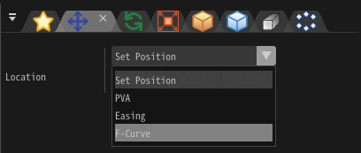

F曲线¶
概述¶
通过此功能，你可以在图表中编辑曲线，为每一帧设置数值。
使用方法¶
显示图表¶
当你为每个项目（位置、旋转等）设置了F曲线时，它们的图表会显示在F曲线窗口中。

当你在窗口左侧的树中选择一个项目，F曲线就显示出来了。你可以通过按住Shift键来一次性选择多个项目。
关于时间线¶
F曲线有两种时间线。
第一种用0到100之间的数字表示，0表示粒子生成的时间，100表示粒子被销毁的时间。 如果粒子的生命周期发生变化，它仍将播放到100。
第二种直接设置帧数。时间的数值直接表示时间。
可以用时间线模式参数切换时间线。
移动/缩放图表¶
| 移动图表 | 在图表中按住右键并移动鼠标。 |
| 水平缩放 | 在图表中按住Ctrl键并滚动鼠标滚轮。 |
| 竖直缩放 | 在图表中按住Alt键并滚动鼠标滚轮。 |
展开/收缩锚点¶
你可以自动设置锚点的位置，方法是选中关键帧并点击展开锚点或收缩锚点按钮。点击展开锚点按钮将展开锚点并使线更加平滑。点击收缩锚点按钮将锚点合并到关键帧的位置，使F曲线的变化更为急剧。

参数¶
时间（百分比/帧）¶
每个关键帧分别设置。设置关键帧的时间百分比/帧。
值¶
每个关键帧分别设置。设置关键帧的值。
补间¶
每个关键帧分别设置。设置这个关键帧和相邻关键帧之间的插值方法。
开始¶
每个图表分别设置。设置如何生成图表左侧的值。
结束¶
每个图表分别设置。设置如何生成图表右侧的值。
采样¶
每个图表分别设置。设置实际播放时，使用多少帧进行插值。值越小，图表的实际形状就越精确。
左¶
每个关键帧分别设置。设置关键帧的左侧锚点的位置。
右¶
每个关键帧分别设置。设置关键帧的右侧锚点的位置。
最大/最小偏移¶
每个图表分别设置。在偏移范围内随机向上/向下移动图表。
时间线模式¶
你可以切换时间线模式。